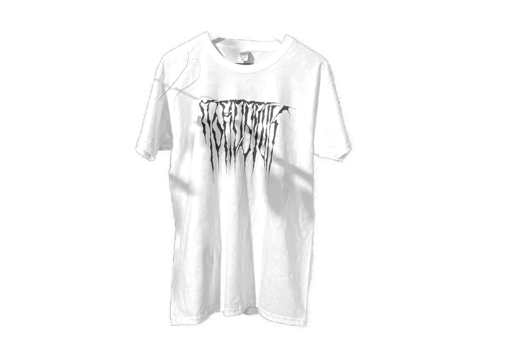
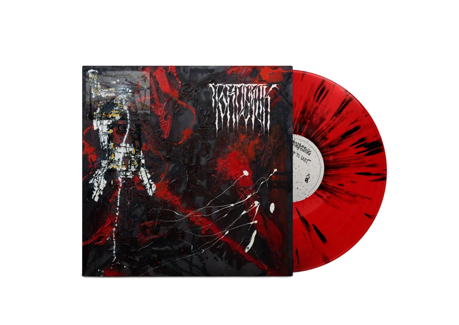
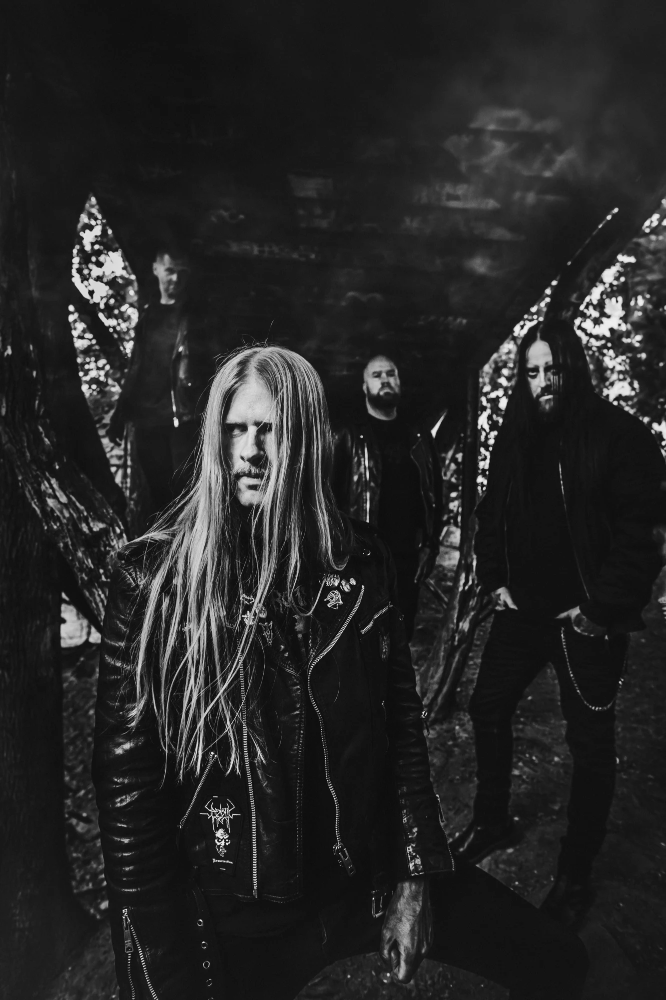
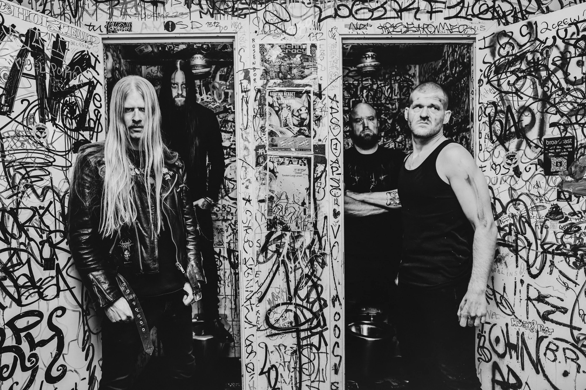

upcoming concerts
See all concerts ›news
See all news ›HELLSEGG BREAKS 40-YEAR SILENCE TO CONFIRM: “YES, THE BASSLINE FOR ‘GRAVØL’ WAS INVENTED BY A MOOSE”JORDSJUK ANNOUNCES EXCLUSIVE NORTHERN LIGHTS SHOW; CANCELS AFTER AUDIENCE “TOO LOUDLY ENJOYING THEMSELVES”Get in touch for gigs and more…


merch →diskography
See all records ›Get in touch for gigs and more…

Jordsjuk have in short time made a big impression on the Norwegian metal scene. The debut album ‘Naglet til livet’, released September 2025, has been described as one of the best debut albums in metal this decade, and in Jernverket’s selection of 2025’s best releases, Jordsjuk snatched 2nd place, out of 447 albums from Norway and abroad. In March 2026 the crowning achievement came when the band was awarded the prestigious Spellemannprisen, aka “The Norwegian Grammy”, in Hardrock & Metal.

Comprised of hardened musicians from the Norwegian underground, fronted by Mannevond on vocals, and songwriter Renton on drums, with Sagstad and Larsen on strings, Oslo’s Jordsjuk serves up a hellish blend of black metal, thrash, death, punk and rock. Riff-driven, catchy and straight-in-your-face, with lyrics steeped in desperation, destruction and decay – all brought forth in Norwegian.
The band already has numerous gigs to their name, with an appearance at Tons of Rock 2026, Norway’s largest festival, as one of the highlights, and it’s on stage their sonic violence truly comes to its right. For those who have seen them before, expectations are high. For everyone else: prepare to be run over!